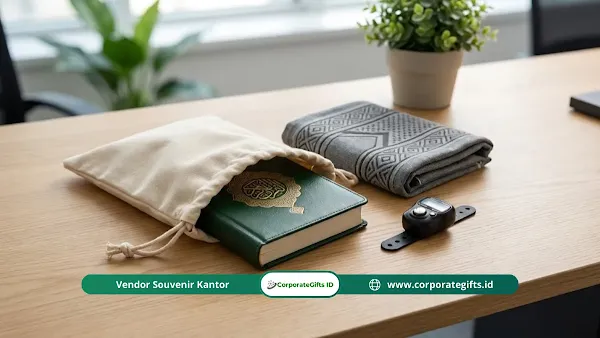

Corporate Gifts ID - Manfaat hampers lebaran kantor adalah meningkatkan moral kerja, mempererat hubungan emosional, serta membangun loyalitas karyawan melalui bentuk apresiasi perusahaan yang nyata dan personal.
Pernahkah Anda mendengar fenomena badai resign tepat setelah Tunjangan Hari Raya (THR) cair? Ini adalah tantangan tahunan yang sering dihadapi divisi HRD dan manajemen perusahaan di Indonesia. Karyawan menunggu momen hari raya untuk menerima hak normatif bonus mereka, lalu mengajukan pengunduran diri karena merasa kurang dihargai secara personal di tempat kerja.
Padahal, ada strategi sederhana namun sangat berdaya guna untuk menyentuh sisi emosional tim dan meredam keinginan berpaling. Jawabannya bukan semata pada penambahan nominal uang tunai, melainkan pada sentuhan personal melalui hampers lebaran kantor. Memberikan bingkisan hari raya bukan sekadar tradisi berbagi kue kering, tetapi merupakan investasi psikologis untuk memenangkan hati talenta terbaik Anda.
Poin Kunci Manfaat Hampers Lebaran Kantor:
- Nilai Emosional Nyata: Menghadirkan wujud fisik yang bisa dirasakan dan dibanggakan di tengah keluarga besar.
- Meredam Turnover Karyawan: Memicu prinsip resiprositas psikologis yang memperkuat loyalitas pasca-pencairan THR.
- Validasi Sosial (Social Currency): Kemasan premium menjadi kebanggaan karyawan saat diunggah ke media sosial dan memperkuat employer branding.
- Kurasi Fungsional & Estetik: Perpaduan perlengkapan kerja harian (tumbler, notebook) dan kudapan artisan premium.
- Distribusi Tepat Waktu: Waktu paling prima untuk membagikan bingkisan adalah H-7 sebelum masa cuti bersama dimulai.
Mengapa Hampers Lebih Bermakna daripada Sekadar Bonus Tunai?
Hampers lebih bermakna daripada bonus tunai karena wujud fisiknya memberikan nilai emosional yang bisa dilihat, disentuh, dan dibagikan bersama keluarga besar di rumah. Sementara itu, uang tunai cenderung langsung terserap untuk pos pengeluaran rutin atau kebutuhan konsumtif tanpa meninggalkan memori yang kuat.
Uang tunai memang krusial, namun bagi sebagian besar karyawan, THR dipandang sebagai kewajiban normatif perusahaan. Begitu saldo masuk rekening, sensasi emosionalnya cepat sirna. Sebaliknya, bingkisan fisik menghadirkan pengalaman multisensori yang bertahan lama:
- Simbol Perhatian Personal: Karyawan menyadari bahwa manajemen meluangkan waktu dan pemikiran khusus untuk memilih produk berkualitas. Hal ini menciptakan persepsi bahwa mereka dipandang sebagai aset berharga, bukan sekadar pelaksana tugas operasional.
- Sensasi Dopamin Unboxing: Ada kegembiraan tersendiri saat seseorang membuka kotak berpita rapi. Pengalaman membuka segel, melihat tatanan produk, dan mencicipi kudapan premium membentuk memori positif yang kuat terhadap perusahaan.
- Membangun Validasi Sosial (Social Currency): Karyawan kerap mengunggah foto hampers kantor ke media sosial mereka secara sukarela. Hal ini menjadi bukti nyata rasa bangga mereka bekerja di bawah naungan korporasi yang bonafide dan peduli.
Apakah Hampers Lebaran Bisa Meningkatkan Loyalitas Karyawan?
Ya, hampers lebaran terbukti mampu meningkatkan loyalitas dan retensi karyawan secara signifikan apabila diberikan dengan strategi yang tulus. Loyalitas kerja jangka panjang berakar pada ikatan emosional dan apresiasi yang konsisten, bukan semata-mata nominal gaji.
Hampers Idul Fitri berfungsi sebagai jembatan komunikasi non-verbal manajemen untuk menyampaikan rasa terima kasih atas kerja keras seluruh tim sepanjang tahun. Dampak nyata pemberian bingkisan ini mencakup:
- Memicu Asas Resiprositas: Berdasarkan ilmu psikologi sosial, manusia memiliki dorongan alami untuk membalas budi atas kebaikan yang diterima. Apresiasi yang tulus memotivasi karyawan membalasnya melalui dedikasi kerja yang lebih tinggi.
- Meredam Keinginan Pindah Kerja (Turnover): Banyak talenta memutuskan resign bukan karena gaji kurang, melainkan karena merasa jerih payahnya tidak diapresiasi. Kehadiran hampers eksklusif menjadi pengingat bahwa perusahaan memperhatikan mereka.
- Memperkuat Kultur Kekeluargaan: Pembagian bingkisan hari raya menyatukan seluruh jajaran dari level staf hingga eksekutif dalam satu kebahagiaan yang sama, memperkokoh rasa persaudaraan lintas divisi.

Kombinasi perlengkapan ibadah travel, sajadah premium, dan aksesoris fungsional sebagai isi hampers lebaran bernilai guna tinggi.
Apa Saja Isi Hampers yang Bikin Karyawan Terkesan?
Isi hampers yang paling membuat karyawan terkesan adalah produk yang memiliki mutu prima, relevan dengan kebutuhan harian, dan bukan barang sisa stok gudang. Kualitas isi bingkisan mencerminkan standar integritas dan rasa hormat manajemen kepada stafnya.
Hindari memberikan makanan dengan tanggal kedaluwarsa mepet atau barang generik yang mudah rusak. Beberapa kombinasi item terkurasi yang sangat diminati antara lain:
- Perlengkapan Kerja Estetik (New Normal Kit): Produk seperti tumbler stainless SUS304, power bank fast charging, atau notebook agenda kulit sintetis yang dapat digunakan setiap hari di kantor.
- Kudapan & Minuman Artisan Premium: Kue kering toples kaca premium, specialty coffee arabika nusantara, atau teh herbal organik yang dapat dinikmati bersama keluarga saat momen silaturahmi.
- Perlengkapan Ibadah Ringkas: Sajadah travel bermotif eksklusif, tasbih digital modern, dan pouch serbaguna berbahan kanvas lembut.
- Voucher Belanja Terkurasi: Sebagai pelengkap tambahan, voucher e-wallet atau supermarket memberikan fleksibilitas ekstra bagi karyawan untuk memenuhi kebutuhan dapurnya.
Bagaimana Cara Mengemas Hampers Agar Terlihat Mewah?
Cara mengemas hampers agar terlihat mewah adalah dengan memanfaatkan kotak rigid (hardbox) magnetik, tas anyaman ramah lingkungan yang dapat digunakan kembali (reusable), serta menyematkan kartu ucapan personal atas nama masing-masing karyawan.
Presentasi visual adalah faktor penentu utama. Sebelum penerima melihat isinya, kemasan luar akan membentuk impresi awal mengenai keseriusan perusahaan:
- Gunakan Hardbox Kokoh atau Tas Anyaman Reusable: Kemasan berbahan rigid box dengan finishing matte atau tas anyaman natural tidak hanya tampil elegan, tetapi juga mendukung kampanye ramah lingkungan (eco-friendly).
- Personalisasi Kartu Ucapan: Hindari mencetak kartu ucapan generik tanpa nama. Selipkan kartu ucapan yang menyebut nama karyawan beserta pesan apresiasi singkat dari manajemen.
- Harmonisasi Palet Warna Korporat: Selaraskan warna pita, kertas serut (shredded paper), dan ornamen hiasan hari raya agar serasi dengan identitas visual merek (brand guideline) perusahaan Anda.
Kapan Waktu Paling Tepat Membagikan Hampers?
Waktu paling ideal membagikan hampers lebaran kantor adalah pada H-7 sebelum hari raya Idul Fitri. Pada rentang waktu ini, suasana kantor sudah kondusif untuk perayaan, namun staf belum berangkat mudik sehingga mereka dapat membawa pulang bingkisan ke kampung halaman dengan leluasa.
Berikut pembagian jadwal distribusi strategis yang disarankan:
- H-7 Sebelum Lebaran (Jadwal Utama): Waktu paling prima bagi karyawan yang berkantor di lokasi pusat (WFO) agar bingkisan dapat langsung disiapkan untuk oleh-oleh keluarga.
- Acara Buka Puasa Bersama Perusahaan: Penyerahan hampers secara simbolis di tengah agenda buka bersama menjadi panggung sempurna untuk membangun kehangatan tim.
- H-14 untuk Pengiriman Luar Kota: Bagi karyawan yang bekerja jarak jauh (remote/WFH) atau berada di kantor cabang lintas kota, pengiriman kargo wajib dilakukan lebih awal guna mengantisipasi keterlambatan ekspedisi.
Tabel Perbandingan Bentuk Apresiasi Karyawan Menjelang Lebaran
Untuk membantu manajemen menentukan alokasi anggaran yang optimal, berikut matriks perbandingan antara berbagai opsi apresiasi menjelang hari raya:
| Bentuk Apresiasi | Nilai Emosional | Dampak Retensi Karyawan | Validasi Sosial & Branding | Rekomendasi Penggunaan |
|---|---|---|---|---|
| Hampers Fisik Korporat | Sangat Tinggi (Personal & Berkesan) | Maksimal (Mencegah niat resign pasca-THR) | Sangat Tinggi (Dipamerkan di medsos & keluarga) | Sangat Disarankan sebagai instrumen apresiasi utama |
| Bonus Tunai (THR) | Netral (Dianggap hak normatif rutin) | Rendah (Cenderung habis untuk kebutuhan konsumtif) | Nol (Bersifat privat dan tidak terlihat) | Wajib dipenuhi sesuai aturan ketenagakerjaan |
| E-Voucher / Hadiah Digital | Sedang (Praktis tapi minim sentuhan fisik) | Sedang (Fleksibilitas belanja mandiri) | Rendah (Kurang memiliki daya tarik visual) | Solusi cadangan khusus karyawan remote luar pulau |
Kesimpulan dan Konsultasi Pengadaan
Pada akhirnya, manfaat hampers lebaran kantor jauh melampaui nilai nominal rupiah yang dikeluarkan perusahaan. Bingkisan hari raya adalah investasi nyata pada modal manusia (human capital) yang menghasilkan imbal balik jangka panjang berupa loyalitas tim yang kokoh, produktivitas tinggi, dan suasana kerja yang positif.
Karyawan yang merasa dihargai dengan tulus tidak akan mudah tergoda oleh tawaran kompetitor yang hanya menjanjikan sedikit selisih gaji. Jangan biarkan momentum emas Idul Fitri berlalu tanpa meninggalkan jejak apresiasi yang mendalam bagi mereka yang telah berjuang bersama perusahaan Anda.
Sebagai partner pengadaan hampers perusahaan tepercaya di Indonesia, CorporateGifts.ID siap membantu Anda merancang paket bingkisan Idul Fitri eksklusif yang sesuai dengan identitas dan anggaran korporat Anda.